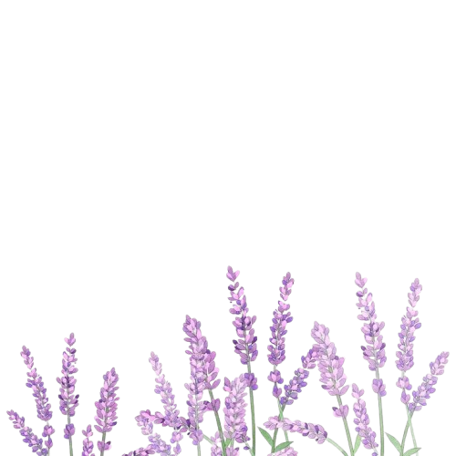
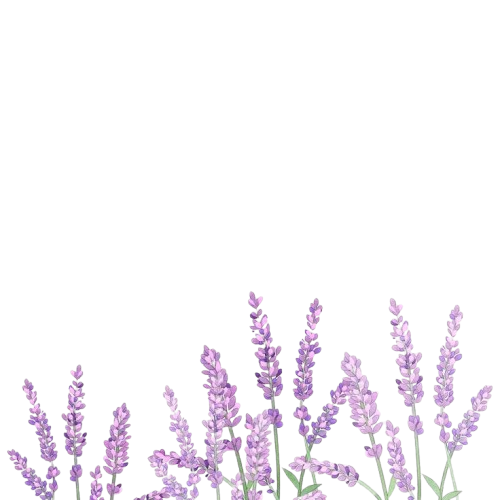

My dearest,
I may not be a poetic guy, but I know to myself that I wrote this letter with all of my heart. To be honest, I have so many things to say. I thought that I might as well use this opportunity to say everything. I'm not here to bring up the past. I'm here to express or say everything that I've kept in these past few days.
I wrote this letter because it's my way to show that I'm still looking forward to what we could've been, the potential we have, and the simple possibility that we could have been happy just by existing in the same space.
You’re the girl who carries so much depth and complexity, yet never once made me question that complexity of yours. You made me want to understand you without needing answers, to know you without hesitation. You made me realize that what I see of you online is only a glimpse, a reflection—but never the full truth of who you truly are. And it’s that unseen part of you, the real you, that makes me want to know you even more. However, understanding and knowing you more is not the final stretch of my intentions.
As a matter of fact. I don't really know why I am so into you. What's in it for me if I pursue you? What magic did you cast that made me like this haha? Despite having these questions. I didn't hate it. In fact, I searched and followed the thread to see what could be the reason is. Unfortunately until now, I am nowhere near to the answer I'm seeking. I am really scared because it feels like I'm walking into a path with no hesitation. What if it is real, am I fully prepared?..... I stumbled upon this question and I realized that whether it's real or not. The answer is no. I wouldn't know whether if I'm prepared, until I accept that I'm walking into an unknown abyss that is waiting for me to explore. Despite knowing that it would cost me, that's fine by me. Because what's life without whimsy?
I know it sounds so ridiculous to think that it hasn't been a month, but I saw myself fell in love with you. Love is really a dangerous thing. I remember this line from this movie I watched that "Being romantic takes a hell of a lot of hope" at first I didn't saw it in a way that it would make sense, but now it did. I FOUND YOU AND IT FEELS LIKE HOPE.
As I am writing this letter. I came to a realization that, I don't know if you still feel the same way as I do. Given that I made you uncomfortable and broke the bond that you and I are looking forward to. At this point, it's not really my place to question what and how you feel 'bout me......I know you'll probably hate me for saying this. But, you're the only person that made me get out of my shell, and I really hope you get what I mean. But if you ask me. You're the only person who made me want to understand and remember. I didn't had or felt this kind of emotions before. The funny thing was, I thought that I am good enough for you, but in reality, I'm not. I still need to suffer, learn, and grow.
Because of that, I realized I don’t actually want to disappear from your life. I thought that after what happened, distancing myself was the right thing to do, maybe to fix what I broke or to make things easier for you. But the truth is, pretending that I don’t want to talk to you would only be me lying — both to you and to myself. I’m not asking to go back to where we were, and I’m not trying to rush anything. I just don’t want us to suddenly become strangers when what we had, even for a short time, was real to me.
Still, I don’t want to completely disappear from your life. I hope we can still talk from time to time. Not everyday, not constantly, and not in a way that feels obligated. Just simple conversations that happen naturally. The kind where we don’t feel pressured to reply immediately, or to act a certain way. Just two people talking because they want to, not because they have to. I don’t want to be a burden, but I also don’t want to become a stranger to you.
I’m not asking you for an answer right now, and I’m not asking you to feel the same way as I do. I just want to keep a connection, even if it’s quiet and slow. We can take things gently, at whatever pace feels comfortable for you. I’d rather have a simple, honest connection than lose it completely because I was too afraid to stay and too afraid to make up for my mistakes. Maybe in the future we can try again, who knows? HAHAHA.
Whatever happens after this, I still genuinely wish the best for you. I hope life treats you kindly, and I hope the things you’re working hard for slowly fall into place. I hope you meet people who understand you and make you feel safe. And if I get the chance to still be one of the people you talk to, even just sometimes, that would already mean a lot to me.
I’m not writing this letter to ask for anything back. Not a promise, not a decision, and not even a reply and also I’m not writing this to pressure you or to pull you into something you’re not ready for. I just didn’t want my feelings to remain unsaid. Maybe we won’t know yet what this becomes, and maybe we don’t have to figure it out immediately. For now, I’m simply choosing to stay — not to hold you, but to be here, naturally, if you’ll let me. At least keep this to yourself; You were never meant to be picked. You were supposed to be seen - pearlieee.
I see you, vee! Take care of yourself, always.
 
